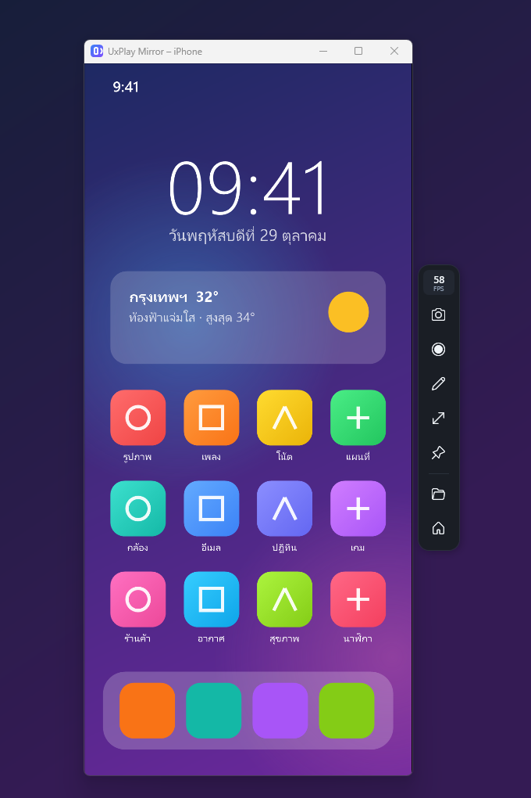

แชร์จอ iPhone ขึ้นคอม Windows
ใช้ AirPlay ที่มีอยู่แล้วใน iPhone และ iPad ไม่ต้องลงแอปในมือถือ ภาพลื่น 60 FPS พร้อมเสียง ฟรี ทุกเมนูเป็นภาษาไทย ติดตั้งครั้งเดียวราว 10–20 นาที
ทำอะไรได้บ้าง
เล่นเกมแล้วสตรีม สอนหน้าห้อง ทดสอบแอป หรือแค่อยากเห็นจอใหญ่ขึ้น กดเลือกดูทีละอย่าง
ภาพจริงจากตัวโปรแกรม หน้าจอมือถือในภาพเป็นภาพตัวอย่าง

วิธีติดตั้ง
ทำครั้งเดียว ใช้เวลาประมาณ 10–20 นาที และต้องต่ออินเทอร์เน็ตระหว่างติดตั้ง ทุกหน้าจอเตือนที่จะเจอมีวิธีผ่านบอกไว้ครบ
กำลังดาวน์โหลด UxPlayMirrorSetup.exe ขั้นต่อไป: เปิดไฟล์ แล้วกด More info และ Run anyway
แก้ปัญหาที่เจอบ่อย
iPhone มองไม่เห็นคอมในรายการ
ให้ iPhone กับคอมใช้เราเตอร์ตัวเดียวกัน ปิด VPN ชั่วคราว และตั้งเครือข่ายของคอมเป็น Private จากนั้นเปิดหน้า “ตรวจสอบและช่วยเหลือ” ในโปรแกรม จะบอกว่าติดตรงไหนพร้อมปุ่มพาไปแก้
เปิดโปรแกรมแล้วขึ้นว่าตัวรับสัญญาณมีปัญหา
ส่วนใหญ่เกิดจาก Smart App Control ของ Windows 11 บล็อกไฟล์ของ GStreamer ต้องปิดที่ Windows Security → App & browser control → Smart App Control ดูรายละเอียดในขั้นตอนติดตั้งข้อ 3
Windows เตือนว่า mdnsNSP.dll ถูกบล็อก
ไฟล์นี้เป็นของ Bonjour รุ่นเก่าที่เคยลงไว้ เช่น ติดมากับ iTunes รุ่นเก่า UxPlay Mirror ไม่ต้องใช้ Bonjour เพราะ UxPlay บน Windows ประกาศชื่อในเครือข่าย (mDNS) ได้เอง ถ้าไม่มีโปรแกรมอื่นใช้ Bonjour แล้ว ถอนออกได้ที่ Settings → Apps แล้วคำเตือนจะหายไป
แอปดูหนังบางแอปขึ้นจอดำ
แอปที่มีลิขสิทธิ์ เช่น Netflix ไม่อนุญาตให้สะท้อนหน้าจอ เป็นข้อจำกัดของแอปนั้น ไม่ใช่ปัญหาของโปรแกรม
ติดตั้งไม่สำเร็จ หรือยังแก้ไม่ได้
ลองเปิดตัวติดตั้งใหม่อีกครั้งโดยต่ออินเทอร์เน็ตไว้ ถ้ายังไม่ได้ แจ้งปัญหาบน GitHub พร้อมบอกว่าค้างที่ขั้นไหน และแนบภาพหน้าจอ
คำถามที่พบบ่อย
ตั้งเป็น 120 FPS ได้ไหม
ได้ ในหน้าตั้งค่ามีตัวเลือก 30, 60 และ 120 FPS แต่ 120 FPS เป็นโหมดทดลอง เพราะ iPhone ส่วนใหญ่ส่งภาพผ่าน AirPlay ได้สูงสุด 60 FPS ค่าเริ่มต้นคือ 60 FPS ถ้าภาพกระตุก ให้ iPhone ใช้ Wi-Fi 5 GHz หรือลดเป็น 1080p / 30 FPS
ปลอดภัยไหม ติดตั้งอะไรลงเครื่องบ้าง
ซอร์สโค้ดเปิดให้ดูทั้งหมดบน GitHub ตัวติดตั้งลง MSYS2 ไว้ที่ C:\msys64 (เครื่องมือมาตรฐานสำหรับ build โปรแกรมบน Windows) แล้ว build UxPlay จากซอร์สในเครื่อง ตัวโปรแกรมอยู่ในโฟลเดอร์ผู้ใช้ ไม่ต้องใช้สิทธิ์ผู้ดูแลระบบ ยกเว้นตอนขออนุญาต Firewall
ใช้ควบคุม iPhone จากคอมได้ไหม
ไม่ได้ AirPlay ส่งภาพและเสียงได้ทางเดียว Apple ไม่เปิดให้ควบคุมมือถือจากคอม
ถอนการติดตั้งยังไง
ไปที่ Settings → Apps เลือก UxPlay Mirror แล้วกด Uninstall ภาพและวิดีโอที่บันทึกไว้จะไม่ถูกลบ ส่วน MSYS2 ถอนแยกได้จากรายการ Apps เช่นกัน
ดาวน์โหลด UxPlay Mirror
ฟรีทั้งหมด ไม่ต้องสมัคร ไม่มีโฆษณา ไฟล์ UxPlayMirrorSetup.exe เวอร์ชัน 1.0 ขนาด 0.4 MB แล้วตัวติดตั้งจะโหลดส่วนประกอบอีกราว 1 GB
ไฟล์นี้ใช้กับคอม Windows เปิด jakkitt.github.io/uxplay-mirror บนคอม หรือดาวน์โหลดไฟล์ที่นี่
หลังกดดาวน์โหลด
- เปิดไฟล์ ถ้า Windows ขึ้นหน้าจอสีน้ำเงิน ให้กด More info แล้วกด Run anyway
- ถ้าตัวติดตั้งแจ้งว่า Smart App Control เปิดอยู่ ต้องปิดก่อน ดูวิธี
- กด ติดตั้ง แล้วรอราว 10–20 นาที จากนั้นแชร์จอจาก iPhone ได้เลย
- ระบบปฏิบัติการ
- Windows 10 / 11 แบบ 64 บิต
- พื้นที่ว่าง
- ประมาณ 2 GB
- ระหว่างติดตั้ง
- ต้องต่ออินเทอร์เน็ต
- อุปกรณ์
- iPhone / iPad ที่มี AirPlay
- เครือข่าย
- คอมกับมือถือใช้เราเตอร์เดียวกัน